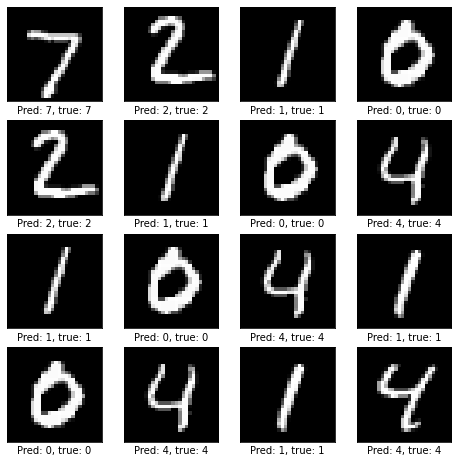

MNIST Example
Example model for classifying handwritten digits in the MNIST dataset.
Download
If the download does not start automatically, right-click and select "Save Link As..."
requirements.txt cnn-model-v1.zip
Or download using
wget:
wget https://raw.githubusercontent.com/smaeland/model-zoo-mnist-example/main/requirements.txt
wget https://github.com/smaeland/model-zoo-mnist-example/raw/main/cnn-model-v1.zipThis model serves as an example of how to download, run, and modify the contributions in the Model Zoo. For additional examples and instructions, consult the models' GitHub repository. The model is implemented in Keras.

Requirements
Install requirements using pip:
wget https://raw.githubusercontent.com/smaeland/model-zoo-mnist-example/main/requirements.txt
pip install -r requirements.txt
Download the model
The model is available as a zip file:
wget https://github.com/smaeland/model-zoo-mnist-example/raw/main/cnn-model-v1.zip
unzip cnn-model-v1.zip
Instantiate it by calling load_model:
import tensorflow as tf
model = tf.keras.models.load_model('cnn-model-v1')
Download example data
The data is directly available through Keras:
(x_train, y_train), (x_test, y_test) = tf.keras.datasets.mnist.load_data()
Preprocessing
Model preprocessing involves scaling the images from [0, 255] to [0.0, 1.0].
Input data should have dimensions (n_samples, 28, 28, 1). The example data
does not include the channel (last) dimension; use the snippet below to add it.
x_train = x_train.astype("float32") / 255
x_test = x_test.astype("float32") / 255
x_train = tf.expand_dims(x_train, axis=-1)
x_test = tf.expand_dims(x_test, axis=-1)
y_train = tf.keras.utils.to_categorical(y_train)
y_test = tf.keras.utils.to_categorical(y_test)
Run
preds = model.predict(x_test)
acc = tf.keras.metrics.CategoricalAccuracy()
acc.update_state(y_test, preds)
print('Accuracy:', acc.result().numpy())
# Accuracy: 0.991
Modify
Being implemented in Keras, it is easy to fine-tune and modify the model, by following the Keras docs. A specific example is also given in the Jupyter notebook in the models' GitHub repository.